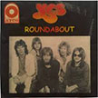

knitgit by tremlab
sdhfkjsdhfkj
the roundabout

This app will calculate a sweater knitting pattern for you based on a few basic measurents.
This project is knit "in the round", i.e. seamless.
It can incorporate any stitch, yarn, or needle size you want.
This sweater is a basic, straight cut with a scoop neck.
Your choice if you want it baggy, or sleek.
Cropped or tunic.
Long sleeve or cap sleeve.
Have fun with it!!!